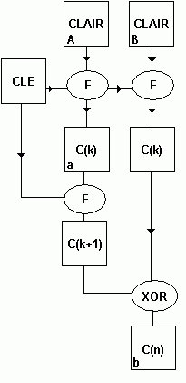

|
|
Algorithme de cryptage matriciel
|
|
Pour
ce premier numéro, je vous propose un algorithme de cryptage
matriciel 128 bits, que j'ai créé et codé.
Vous
connaissez tous le nouvel algorithme cryptographique du standard
américain, l’AES ou Rinjdael. Cet algorithme est matriciel,
autrement dit il fonctionne avec des matrices de chiffres, et
code n’importe quoi de cette manière. Je me suis donc attelé
à la tâche, et j’ai conçu un algorithme de ce genre, plus
simple mais pas forcément moins sécurisé.
Le
principe est assez simple. La législation française (encore
elle) nous limite à 128 bits en taille de clé. Afin de rendre
cet algorithme légal, je suis donc obligé de la respecter. En
terme de matrice, sachant que je ne vais manipuler que des
entiers, je retiens comme clé une matrice de 4 octets sur 4,
soit 16 cases de 8 bits (les entiers sont en fait des caractères)
ce qui donne bien 128 bits de clé. Ce qui implique logiquement
un cryptage par bloc de 128 bits, ce qui n’est pas désagréable
à réaliser.
Mais
voyons donc l’algorithme, car c’est celui-ci qui est le cœur
même du codage.
Un
utilisateur lambda, (on va l’appeler John ;) se crée une
clé aléatoire, ou pseudo-aléatoire, de 128 bits, qui lui
servira pour encoder.
John
veut donc crypter un message M de taille n (en octets). Si n
n’est pas un multiple de 16, le dernier bloc ne sera pas
complet. Il faut donc palier à cet inconvénient, en jouant sur
la structure du crypté.
On
peut donc déjà définir qu’il faudra un caractère qui
indiquera le nombre d’octets (d’entiers) à ne pas prendre
en considération une fois le message décrypté. Dans mon cas,
je vais juste indiquer le nombre d’entiers à ne pas prendre
en compte dans le dernier bloc.
On
obtient une structure de ce type :
L’extra
est en fait un entier codé sur 8 bits (et donc un short int)
qui indique le nombre d’entiers à ne pas prendre en compte
dans la dernière matrice.
1)
Algorithme
de cryptage
L’algorithme
de cryptage en lui-même est assez complexe. Il est basé sur
deux opérations simples et rapides à effectuer : le XOR
(Ou Exclusif) et le modulo.
Chaque
matrice claire subit, par tour, trois transformations :
-
Un
XOR bit à bit avec la matrice clé
-
Un
décalage des colonnes différent suivant la ligne (Row Shift)
-
Un
décalage des lignes différent suivant la colonne (Col Shift)
On
effectue n tours, statistiquement déterminé à 12, afin de
rendre le cryptage solide.
Après
chaque n tours, pour les blocs situés après le premier, on
ajoute une clé de brouillage, dépendante du crypté précédent,
qui permet d’éviter toute redondance. Cette clé de
brouillage est en fait le crypté précédent, crypté avec 1
tour.
Pour
le dernier bloc, les entiers manquants sont tirés aléatoirement,
afin de rendre plus difficile la cryptanalyse .
Voici
le schéma de cryptage :

Ce
schéma est un exemple pour un message de deux blocs, donc de
256 bits (soit 32 octets). Le premier bloc (A) subit une
transformation par F (qui est en fait les trois transformations
réunies) et on obtient C(k) avec k le nombre de tours effectués.
Pour le bloc (B), on obtient premièrement C(k), puis C(n) car
on fait un XOR bit à bit avec le bloc
C(k+1) précédent. On écrit dans le fichier le bloc
(a), puis (b), puis les suivants. Le premier C(k) permettra de
chaîner les C(k+1) afin de permettre le décryptage.
L’avantage
de cette méthode est de constituer un flux. Si quelqu’un
intercepte le flux, il ne possède pas C(k+1) et ne peux donc
pas décrypter le message en cours de transmission. Cette clé
de brouillage a été ajouté pour éviter la redondance
cyclique (tous les 128 bits) et aussi afin d’empêcher
l’interception de flux.
En
ce qui concerne les clés, elles sont générées pseudo-aléatoirement,
et cela donne un nombre de clés possibles de 3,1028 x 1038.
Beaucoup quoi !
2)
Calculs
des décalages
Les
décalages sont calculés à partir de la clé. En faisant un OU
EXCLUSIF global de tous les entiers d’une ligne, on obtient un
entier dhi (avec i le numéro de la ligne) qui est en
fait le décalage de cette ligne. Idem pour le décalage des
colonnes. Afin que ce décalage soit possible, on calcule d=dhi
mod 4, ce qui permet d’effectuer une rotation cyclique de la
rangée, comme ceci :
Si
cette rangée subit un décalage de 3 on obtient alors :
3)
Algorithme
de
décryptage
Pour
le décryptage , on applique le même principe mais avec F-1
, c’est à dire que l’on effectue les transformations en
sens inverse, et on peut décrypter ainsi un message codé de
cette manière. Attention, il faut d’abord trouver le premier
C(k+1) en cryptant le premier bloc du crypté (un seul tour)
avec la clé. Ensuite on applique juste la procédure inverse.
Je
vous fournis avec cet article les codes sources des procédures
principales (commentés) disponible sur le serveur d’Espionet,
mais l’algorithme principal n’est pas terminé. Sachez
toutefois que ces sources sont fonctionnelles, et que vous
disposez de toutes les fonctions nécessaires à l’algorithme.
Il
va de soi que ce code source n’est que le résultat actuel de
recherches en cours, et qu'il n’est donc pas optimisé, de
manière à rendre aussi claire que possible la méthode employée.
Ne vous étonnez pas si vous remarquez les mêmes structures ou
le même code dans les différentes fonctions. Pour l’instant,
ces fonctions renvoient juste une adresse d’un tableau de 16
entiers, afin de faciliter ensuite le travail. L’utilisation
de pointeurs dans l’algorithme principal sera donc nécessaire.
4)
Conclusion
Cet
algorithme a été testé, et marche correctement . Il est
recommandé de choisir n entre 10 et 14 pour avoir une puissance
de cryptage maximale. Utilisez ce code source à bon escient, il
appartient à la communauté. J’espère que vous aurez compris
le fonctionnement d’un cryptage matriciel, grâce à cet
exemple.
e-mail:
virtualabs@ifrance.com
Greetz
to : @i.corps and
CoCo
-----------------------------------------------------------------------
Virtualabs
Pour
me contacter :
Virtualabs :
virtualabs@ifrance.com
|